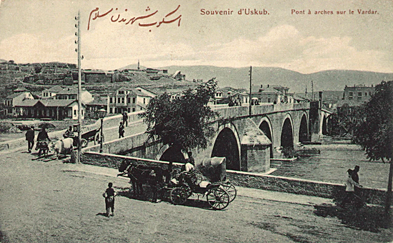
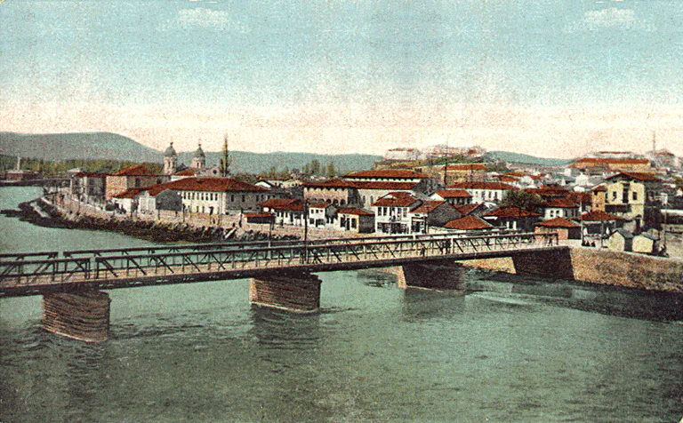

Скопје 1916 - 1917 мост
Документи од Балканските воијни
- Година
- 1916-1917
- Должина
- 00:13

Во центарот на градот , на р.Вардар, изграден е монументален камен мост (популарно наречен Камен мост). Според некои турски извори мостот е изграден во втората половина на 15 век, за време на владеењето на султанот Мехмед II. Според најнови истражувања од 1990 година при реконструкцијата на мостот, се претпоставува дека мостот е изграден во времето на Јустинијан I во 6 век. Изграден е од добро обработени камени блокови, додека неговата конструкција се потпира на моќни столбови, меѓусебно поврзани со полукружни лакови - 13 на број. 1905 година се изградени бетонски патеки, кои пред тоа биле покриени со даски. 1937 е проширен со конзоли, на кои биле преместени пешачките патеки. На фотографијата е Скопје - крај на 19 век. Поглед на Камениот мост и стариот чинар. Горе десно е скопската тврдина - Кале со касарната.

Камениот мост - крај на 19 век. Во позадина-лево се гледа Бурмали џамија.

Камениот мост - крај на 19 век. Во позадина-лево се гледа Бурмали џамија.

Скопје на крај на 19 век и на почетокот на 20 век (лето) - поглед на Камениот мост. Во преден план е телефонски столб со поштенско сандаче. Веднаш до него е фенер кој претставува прв облик на градска комунална опрема. Бидејќи е лето пешаците се заштитуваат од сонцето со чадори. За превоз на товар се користеле запрежни воловски коли, а пајтоните служеле како јавно превозно средство на граѓаните. Веднаш до мостот десно се гледа едно големо воденично тркало.

Скопје кон крајот на 19 век и почетокот на 20 век (зимо) - поглед на Камениот мост. Во преден план е телефонски столб со поштенско сандаче. Веднаш до нив е фенер кој претставува прв облик на градска комунална опрема. Се забележуваат некалдрмисани калливи улици. Во заден план е Еврејското маало и скопската тврдина - Кале.

Панорама на Камениот мост во почетокот на 20 век.

Камениот мост - околу 1905 година. Во позадина, горе лево, се гледа скопската тврдина - Кале со касарните. Десно е стариот чинар.

Камениот мост на крај на 19 век и почеток на 20 век. Десно горе се гледа скопската рврдина - Кале.

Скопје во турскиот период - почеток на 20 век. На фотографијата се гледа дека едната половина од Камениот мост е со камена ограда, а другата со привремена ограда со железо и дрво. 1905 година започнало заменувањето на камената ограда со железна. Во Скопје во турскиот период - почеток на 20 век. На фотографијата се гледа дека едната половина од Камениот мост е со камена ограда, а другата со привремена ограда со железо и дрво. 1905 година започнало заменувањето на камената ограда со железна. Во левиот агол, одзади Камениот мост се гледа турскиот театар. Веднаш до мостот десно се гледа едно големо воденично тркало. Десно е стариот чинар на кој било обесено мртвото тело на Карпош, веднаш по задушувањето на Карпошовото востание - 1689 година. Во позадината целосно се гледа скопската тврдина - Кале и стамбени објекти во Еврејското маало. Интересно е белењето платно кое го вршеле жените во чистите води на р.Вардар - преден план на фотографијата.

Група Турци на Камениот мост - почеток на 20 век. Интересно е да се забележи, дека тротоа- рите на мостот се покриени со штици.

Железничкиот мост на р.Вардар во Скопје - крај на 19 век.

Камен мост на реката Пчиња - околина на Скопје (денес не постои). Според човекот кој стои на врвот на мостот, висината на мостот е околу 15 метри од површината на водата. (10-тите години)

Скопје 1902 година. На фотографијата се гледа дрвениот мост, а одзади него е старата кафеана "Богес", во која се одржувале првите театарски претстави. Над него е скопската тврдина - Кале со воената касарна.

Камениот мост - 1905 година. Лево, зад него, се гледа Турскиот театар, а во горниот дел, скопската тврдина - Кале.

Поглед кон десната страна на р.Вардар низ крошните на стариот чинар - околу 1910 година. Опфатени се: дел од Камениот мост, Бурмали џамија и дуќаните пред Бурмали џамија.

Скопје пред 1912 година. Камениот мост со конзоли и железна ограда. Десно е стариот чинар, а горе се гледа скопската тврдина - Кале.

Скопје за време на Балканската бојна. Во позадина Бурмали џамија.

Поглед на дел од Камениот мост кон скопската тврдина - Кале (околу 1910 година)

Поглед на дел од Камениот мост, а во позадината лево се гледа турскиот театар. Над него горе се извишува скопската тврдина - Кале. (околу 1910 година)

Камениот мост со група луѓе на него - околу 1913 година

Камениот мост на р.Вардар во Скопје - околу 1913 година

Камениот мост на р.Вардар во Скопје - околу 1913 година. Во позадината, десно горе, се гледа горе скопската тврдина - Кале.

Скопје 1912 година - Уметничка слика. Камениот мост и Бурмали џамија. Во заден план е прекрасен зелен појас од тополи. Се забележува интерполација на класична архитектура. Функцијата на новите кејски простори се нов урбан елемент. Групациите од стамбени, трговски и занаетчиски објекти пред мостот се во функција и составен дел од композицијата, со традиционални белези и елементи на европски влијанија.

Железниот мост на р.Вардар во Скопје со поглед кон старото училиште, Св.Мина и Св.Богородица - околу 1920 година.

Железниот мост изграден 1905 година. Во заден план е објектот на првиот Скопски универзитет. (1915 година)

Железниот мост изграден 1905 година. Во заден план е објектот на првиот Скопски универзитет. (20-тите години.)

Железниот мост на р.Вардар во Скопје, изграден 1905 година. Во задниот план е објектот на првиот скопски универзитет. (20-тите години)

Железниот мост изграден 1905 година. (20-тите години)

Железниот мост на р.Вардар во Скопје со поглед на објектите на кејот "Димитар Влахов". (20-тите години)

Скопје, околу 1920 год. Дел од градскиот плоштад пред Камениот мост. Први киосци за попатен сервис и продажба. Киосците имаат нагласена архитектура во деталите т.е. обликувањето на покривите. Мостот е проширен со пешачки конзоли. Во позадината горе се гледа скопската тврдина - Кале.

Скопје, околу1920 год. Дел од градскиот плоштад пред Камениот мост. Пред и на Камениот мост се забележуваат мали градби за информирање на граѓаните преку плакати. Мостот е проширен со пешачки конзоли. Во позадината, горе лево, се гледа скопската тврдина - Кале.

Камениот мост со група луѓе кои го гледаат зголеменото ниво на водата во р.Вардар. (20-тите години)

Камениот мост - 1920 година. Во позадина се гледа Отоманската банка.

Поглед на Камениот мост кон Стариот град и Пајко маало со ординацијата на забарот Д-р Рубенс и Отоманската банка - околу 1927 година.

Поглед на Камениот мост кон Стариот град, чаршијата и брегот Гази Баба. Веднаш до мостот од десна страна, се наоѓала ординацијата на забарот Д-р Рубенс. Малку подесно е објектот на Отоманската банка. Помеѓу нив било мало плоштадче на кое имало стојалиште за пајтони. А во средината на плоштадчето бил споменикот на паднатите борци во Балканската војна - околу 1927 година.

Поглед на Камениот мост кон Стариот град, чаршијата и брегот Гази Баба. Веднаш до мостот од десна страна, се наоѓала ординацијата на забарот Д-р Рубенс. Малку подесно е објектот на Отоманската банка. Помеѓу нив било мало плоштадче на кое имало стојалиште за пајтони. А во средината на плоштадчето бил споменикот на паднатите борци - околу 1927 година.

Поглед на Камениот мост кон Стариот град и Пајко маало со ординацијата на забарот Д-р Рубен и Отоманската банка - околу 1927 година.

Поглед кон десната страна на р.Вардар со дел од мостот и Офицерскиот дом - 30-тите години. На левата страна се гледа остатокот од исечениот стар чинар на кој било обесено мртвото тело на Карпош 1689 година, по задушувањето на востанието.

Поглед на дел од Камениот мост, стариот чинар и скопската тврдина - Кале - околу 1920 година.

Скопје, околу1920 год. Камениот мост со скопската тврдина - Кале во позадина. Во преден план белење на платна во чистата вода на р.Вардар.

Поглед на дрвеното мовче и кејот на десната страна на р.Вардар. Објектите се со неокласични и барокни детали во архитектонскиот израз. Улицата е денешна "Илинденска". Во низот на објекти е и Средното музичко училиште. Во предниот план е дрвеното мовче преку кое се доаѓало до Народниот театар.

Дрвеното мовче на р.Вардар, со Офицерскиот дом во позадина. До него се објектите на банката и старата пошта - крај на 20-тите години.

Поглед на дрвеното мовче на р.Вардар, а во позадината се гледаат Офицерскиот дом, старата пошта и банката - околу 1930 година.

Поглед кон скопската тврдина - Кале со касарната. Под неа се наоѓа еврејското маало. Во преден план е дрвеното мовче - 50-тите години.

Поглед кон Народниот театар и дрвеното мовче - 30-тите години.

Камениот мост - 30-тите години. Народниот театар во позадина, а над него скопската тврдина - Кале.

Поглед на дел од плоштадот и Камениот мост. Во позадина, лево, се гледа Народниот театар и скопската тврдина - Кале. Забележителен е пајтонот како главно превозно средство за граѓаните. Во преден план срушени објекти за изградба на Народна банка - околу 1930 година.

Надојдена вода на р.Вардар. Мостот е до половина покриен со вода. Фотографијата е снимена од десниот спрема левиот брег - 30-тите години.

Реконструкција и промена на калдрмата на Камениот мост. Поглед на Ристиќевата палата и првите киосци - околу 30-тите години.

Поглед од Камениот мост кон плоштадот. Лево е расчистувањето на просторот за изградба на Народната банка - 30-тите години.

Поглед од левата страна на р.Вардар кон Камениот мост и Офицерскиот дом - 30-тите години.

Камениот мост на р.Вардар - околу 1930 година. Во позадината се гледа Народниот театар, а десно горе скопската тврдина - Кале.

Камениот мост - 50-тите години.

Дел од камениот мост. Во позадина се гледа хотелот "Гранд". - 60-тите години

Камениот мост со скопскатат тврдина - Кале во 60-тите години, пред уредувањето на кејскиот простор.

Поглед на камениот мост и скопската тврдина - Кале. (70-тите години)

Камениот мост во 70-тите години со среден кејски простор.

Камениот мост и плоштадот во 70-тите години.

Поглед, од десната кон левата обала од р.Вардар, кон камениот мост, дел од плоштадот и новата пошта во позадина. (70-тите години)

Денешниот мост "Гоце Делчев", фотографиран од скопската тврдина - Кале. (90-тите години)

Документи од Балканските воијни
 Аквадукт4 разгледници
Аквадукт4 разгледници Кале30 разгледници
Кале30 разгледници Мостови60 разгледници
Мостови60 разгледници Кеј58 разгледници
Кеј58 разгледници Плоштад46 разгледници
Плоштад46 разгледници Објекти66 разгледници
Објекти66 разгледници Христијански храмови19 разгледници
Христијански храмови19 разгледници Муслимански објекти33 разгледници
Муслимански објекти33 разгледници Офицерски дом29 разгледници
Офицерски дом29 разгледници Театар28 разгледници
Театар28 разгледници Железничка станица13 разгледници
Железничка станица13 разгледници Училишта36 разгледници
Училишта36 разгледници Паркови12 разгледници
Паркови12 разгледници Пазари18 разгледници
Пазари18 разгледници Улици38 разгледници
Улици38 разгледници Панорама I60 разгледници
Панорама I60 разгледници Панорама II30 разгледници
Панорама II30 разгледници Колажи55 разгледници
Колажи55 разгледници Поплави9 разгледници
Поплави9 разгледници Земјотрес27 разгледници
Земјотрес27 разгледници Скопје 200026 разгледници
Скопје 200026 разгледници